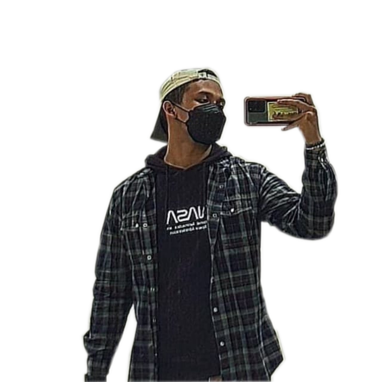

Computer Aided Design (CAD)
Raster Vs Vector
Raster files are commonly used for editing images, photos and graphics, whereas vector files work better digital illustrations, complex graphics and logo. Due to the resolution of vectors remains the same when rezied, making them suitable for a wide vareity of printed formats.

What is GIMP?
GIMP is an acronym for GNU Image Manipulation Program. It is a freely distributed program for such tasks as photo retouching, image composition and image authoring.

What is Inkscape?
The variety of what can be done with Inkscape is vast and sometimes surprising. It is used to make diagrams, logos, programmatic marketing materials, web graphics, and even for paper scrapbooking
What is Fusion 360?
With Fusion 360 your able to create 3D design, collaborate, manage data, create toolpaths and run simulations to validate your design.

GIMP Exercise
We were task to remove the background of any images using GIMP by our lecturer. The picture I use was myself which is meant for this website
In order to create the image above I have to use a certain tool within gimp.
Procedure are:
1. Select a desire image
2. Ensure the image is in alpha channel. But selecting layer -> Transparency -> Add alpha channel
3. Select the free hand tool
4. Select the image that you want to keep
5. Once everything is selected, click on select (Found at the top) and click invert
6. Once invert, click on select (Found at the top) and click feather
7. Click on edit, and click clear
8. The unwanted part that you didn't want is gone
Inkscape Exercise
We were task to create a logo using our name or initial using Inkscape by our lecturer. Lucky for me I have past experience using inkscape, a quick refreash will do the trick

To create the image above or your initial is simple use the tools given to you.
The tool that I used to create my initial is create rectangle and square; create and edit text object
Fusion 360 Exercise
We were task to create the 3 design that were given to us using Fusion 360
Exercise 1

Exercise 1 Drawn
Exercise 2

Exercise 2 Drawn
Exercise 3

Exercise 3 Drawn
The most common tool that I used to do the 3 exercise is line; rectangle; circle; polygon; extrude

How to export to repository
- While in Fusion 360, create a new Project to keep all your files. Save your Fusion 360 exercise, use an appropriate name e.g. Exercise_01
- After you have saved your file, click on the File icon at the top and select “Export”
- Enter filename, check .f3d format, select folder store exported file
- Copy the file into your folder, link it in your blog and then upload to the repository.